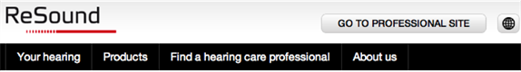
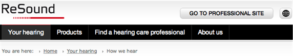
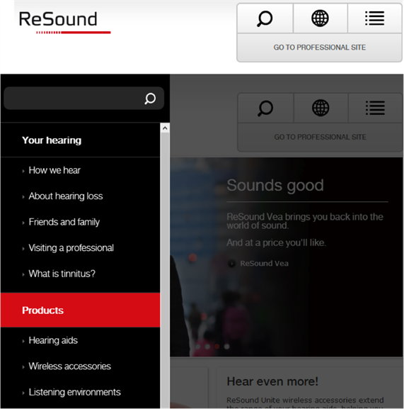
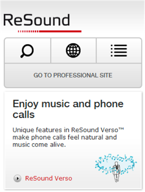
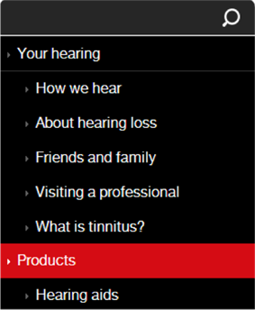

The header and top navigation section consist of the following:
On first level navigation only the top navigation bar is shown.
On second level navigation both the top and the section navigation bars are shown.
On third+ level navigation the top navigation bar is shown, as well as the navigation path.
On tablet devices the menus are shrunk into 3 buttons, which brings up a flying menu when clicked.
On mobile devices the menus are shrunk into 3 buttons. When clicked the menu will be found at the bottom of the page.

Image 1:
First level navigation.
Image 2:
Second level navigation.

Image 3:
Third level navigation.

Image 4:
Flying menu on mobile devices.

Image 4:
Menu reduced to 3 buttons.
Image: 5
Menu appearing at the bottom of the page.